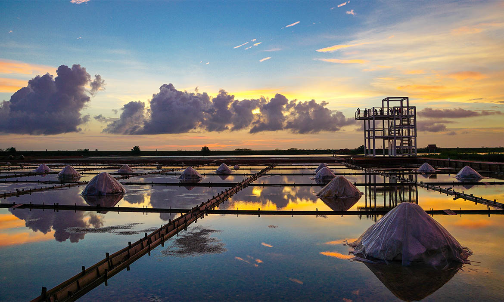

台南景點介紹
四草綠色隧道

四草綠色隧道的航行路線分成兩條：紅樹林隧道及四草台江之旅，在上竹筏之前，每位乘客都需要穿上救生衣，再領取遮陽和保護頭部的斗笠，準備妥當後就可以登上竹筏，開啟這場綠色隧道探險啦！隧道兩旁不時有鷺鷥、夜鷺或其他鳥類低空飛過，四草大眾廟紅樹林保護區林相優美，擁有五梨跤、水筆仔、欖李、海茄苳四種紅樹林。船上的解說員也會沿途細說當地生態，遊客也亦可透過望遠鏡觀察紅樹林下的招潮蟹、彈塗魚等生物，是生態旅遊的最佳場域，亦是攝影師最愛捕捉的自然美景。
井仔腳瓦盤鹽田

井仔腳瓦盤鹽田是北門的第一座鹽田，也是現存最古老的瓦盤鹽田遺址，原為清領時期的瀨東鹽場，西元1818年遷移此至，至今未再移位，是台灣最古老的現址鹽田，至今已有200年歷史。
赤崁樓

赤崁樓可說是台南中西區內最主要的古蹟建築，與安平的安平古堡是台南的兩大明星，1652年荷蘭人在此建立普羅民遮城，至此奠定了台南行政商業中心的位置，歷經300多年來幾經整修改建，始有現今的樣貌，內有海神廟、文昌閣及蓬壺書院，外圍草皮上立著國姓爺受降的雕像，總是讓國內外遊客仔細端詳，遙想著當年國姓爺的英姿煥發，最吸引目光的莫過於移自大南門城邊的9塊御碑，由狀似石龜的贔屭所乘載，傳說贔屭為九龍生子之一，生性喜歡負重，也因為贔屭而讓赤崁樓增添不少傳說故事，至今仍讓人津津樂道。
台南孔廟

「天不生仲尼，萬古如長夜。」至今臺南孔廟是全臺唯一堅持春、秋兩度在清晨五點開始，曙光乍現時結束祭典的孔廟。也是唯一堅持清制祭典的孔廟。更是舉世唯一完整收藏八方清國皇帝御匾的孔廟。 曾是第一，現在是唯一。